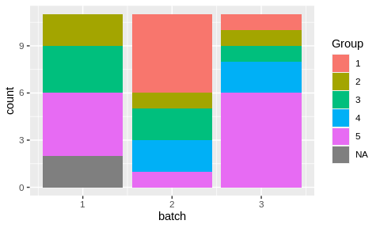
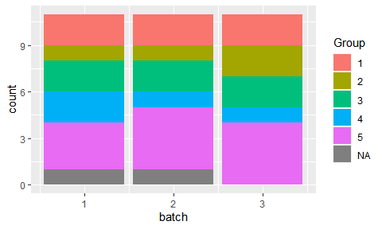
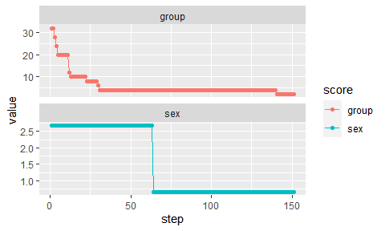

The goal of designit is to generate optimal sample allocations for experimental designs.
Installation
You can install the development version from GitHub with:
# install.packages("devtools")
devtools::install_github("BEDApub/designit")Usage

Batch container
The main class used is BatchContainer, which holds the dimensions for sample allocation. After creating such a container, a list of samples can be allocated in it using a given assignment function.
Creating a table with sample information
library(tidyverse)
library(designit)
data("longitudinal_subject_samples")
# we use a subset of longitudinal_subject_samples data
subject_data <- longitudinal_subject_samples %>%
filter(Group %in% 1:5, Week %in% c(1,4)) %>%
select(SampleID, SubjectID, Group, Sex, Week) %>%
# with two observations per patient
group_by(SubjectID) %>%
filter(n() == 2) %>%
ungroup() %>%
select(SubjectID, Group, Sex) %>%
distinct()
head(subject_data)
#> # A tibble: 6 × 3
#> SubjectID Group Sex
#> <chr> <chr> <chr>
#> 1 P01 1 F
#> 2 P02 1 M
#> 3 P03 1 M
#> 4 P04 1 F
#> 5 P19 1 M
#> 6 P20 1 FCreating a BatchContainer and assigning samples
# a batch container with 3 batches and 11 locations per batch
bc <- BatchContainer$new(
dimensions = list("batch" = 3, "location" = 11),
)
# assign samples randomly
set.seed(17)
bc <- assign_random(bc, subject_data)
bc$get_samples() %>%
ggplot() +
aes(x = batch, fill = Group) +
geom_bar()
Random assignmet of samples to batches produced an uneven distribution.
Optimizing the assignemnt
# set scoring functions
scoring_f <- list(
# first priority, groups are evenly distributed
group = osat_score_generator(batch_vars = "batch",
feature_vars = "Group"),
# second priority, sexes are evenly distributed
sex = osat_score_generator(batch_vars = "batch",
feature_vars = "Sex")
)
bc <- optimize_design(
bc, scoring = scoring_f, max_iter = 150, quiet = TRUE
)
bc$get_samples() %>%
ggplot() +
aes(x = batch, fill = Group) +
geom_bar()
# show optimization trace
bc$plot_trace()
Examples
See vignettes vignette("basic_examples").
Acknowledgement
The logo is inspired by DALL-E 2 and pipette icon by gsagri04.